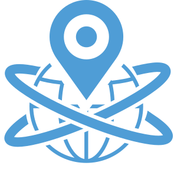

Inglês
Inglês Espanhol
Espanhol

Cada Ponto de Dados que Você Precisa em 1 API
Verificar. Combate à Fraude. Reunir insights. Gerenciar.

Obter Dados de Identificação Digital
Chega de várias integrações, contratos ou recursos de desenvolvedor de terceiros para concluir as integrações. Acesse todo o KYC necessário a partir de um ponto final com ativação sob demanda.

Enriquecer com ID do Documento
Desfrute de verificações integradas de documentos emitidos pelo governo em 230 países com cobertura multilíngue e suporte em mais de 150 idiomas.
Explore Mais

Análise Automatizada de Riscos
Todo o ID digital KYC é coletado e passado por nossa análise de risco avançada para fornecer uma pontuação de risco holística para acionar automaticamente as ações do sistema.

Gerencie
Facilmente
Obtenha uma visão única de todas as verificações KYC e resultados da análise de risco, gerencie ações dinâmicas do sistema, limites de risco, registros e transações de clientes, relatórios, etc.
Escale com Confiança e Receba Mais Usuários
KYC em Camadas
Acesse e habilite instantaneamente uma variedade de serviços de dados a partir de um único endpoint de API sem a integração de custos, tempo e recursos.
Perfis Mais Fortes
Cada ponto de dados que você habilitou fornece validação e insights mais fortes sobre seu cliente para defesa premium contra fraudes.
Dados. Dados.
Mantenha-se ágil por mercado, região ou conta de comerciante com código zero necessário para gerenciar seus serviços de dados KYC ativados.
Dados Agregados
Todos os resultados da verificação de dados KYC com análise de risco associada são consolidados em perfis de clientes e painéis de informações.
Regras de Risco
A flexibilidade permite que centenas de regras de risco de dados atendam às suas necessidades e calculem pontuações de risco com confiança.
Detectar Fraude
O Digital ID KYC é sua primeira camada de defesa contra fraudes para identificar anormalidades nos resultados de dados históricos.
Comportamentais
Identifique e gerencie facilmente evidências ou exceções quando os detalhes de localização, IP, dispositivo ou perfil de um cliente forem alterados.
Conformidade
Nosso conjunto de dados é constantemente atualizado para oferecer suporte contra o KYC em constante evolução exigido pelos regulamentos globais.
Gerenciar KYC Nunca Foi Tão Fácil
Ative o que quiser, quando e onde quiser - com dados vinculados a perfis de clientes.
Jornadas Exclusivas do Cliente
Aproveite a personalização completa para integração e experiências transacionais suaves e perfeitas. Habilite e configure facilmente verificações KYC de identidade digital com regras de risco associadas por tipo de engajamento e por mercado, região ou nível de conta do comerciante.
Dimensionar Globalmente
Obtenha excelente cobertura global de saída de dados para verificar clientes em todo o mundo com facilidade, agilidade e confiança, enquanto aproveita nossos relatórios de simulação de ciência de dados para otimizar a defesa ou plano de fraude de exposição ao risco atual antes da nova entrada no mercado.

Os Essenciais
Verificações KYC para combater fraudes em todos os pontos de contato.
BANCOS DE DADOS GLOBAIS
Acesse nossos bancos de dados brancos e negativos pré-construídos enquanto expande seus bancos de dados, juntamente com o gerenciamento de motivos negados e listas de alto risco.
ID DE DISPOSITIVO INTELIGÊNCIA
Contexto de ID do dispositivo e reputação para detecção de evasão, você afirma a identidade combinando os detalhes do dispositivo para sinalizar atividades suspeitas na entrada.

GEO LOCALIZAÇÃO VERIFICAR
Obtenha uma variedade de informações geográficas e técnicas críticas, incluindo país, fuso horário, código postal, código de área, endereço, proxy e endereço IP do cliente e informações de rede.
VERIFICAÇÃO DE
E-MAIL
A verificação de endereços de e-mail para determinar a validade e a qualidade é fundamental, pois gerar novos e-mails ou acessar os roubados é fácil para os fraudadores.
VERIFICAÇÃO DO COMPARTIMENTO
A pesquisa automatizada obtém o número de identificação do banco do seu cliente, incluindo o emissor do cartão, o nível e o tipo do cartão e alerta quando um novo cartão é verificado e adicionado.
VERIFICAÇÃO DE RISCO
Gerencie toda a saída de verificação de dados em uma plataforma com inteligência de painel em tempo real, filas de risco e centros de ação para melhorar os tempos de resposta.
Enriquecer a Criação de Perfis e a Mitigação de Riscos
Layer Multi-Level Digital ID KYC e Premium KYC em um API Endpoint.
ENDEREÇO
No registro, verifique automaticamente o endereço do cliente globalmente até o endereço de nível postal médio.
ENDEREÇO + DATA DE NASCIMENTO (EUA)
Enriqueça com validação de nome para endereço que inclui correspondência de data de nascimento.
Inteligência em Cascata
Absolutamente a melhor cobertura de dados e saída com o menor preço possível.
Fluxos de Trabalho
Personalize totalmente seus fluxos de trabalho de dados para acionar as verificações KYC apropriadas quando e onde você desejar durante a integração do cliente ou jornadas transacionais para conformidade e defesa contra fraudes.
Ações Dinâmicas do Sistema
Inteligência em cascata multinível para executar automaticamente verificações de dados KYC em camadas, dependendo da análise de pontuação de risco. Permitindo que você valide os clientes mais cedo em seu fluxo de trabalho - economizando seu dinheiro.
Autenticação
As expectativas do cliente para o login da conta e a segurança das transações de pagamento são altas. Escolha seus serviços de dados de autenticação 2FA para maior segurança.
ID do Documento
Proteja a identidade do cliente com verificação de documentos de identificação emitidos pelo governo global e detecção de atividade biométrica em tempo real.
Conformidade AML
Conformidade baseada em dados para proteção contra atividades ilícitas, como lavagem de dinheiro, financiamento do terrorismo ou transações fraudulentas com facilidade.
Dados KYT
Proteja suas receitas com verificações contínuas de identidade KYC, verificações transacionais e análise de risco automatizada com painel de KPI ao vivo e centro de ação.